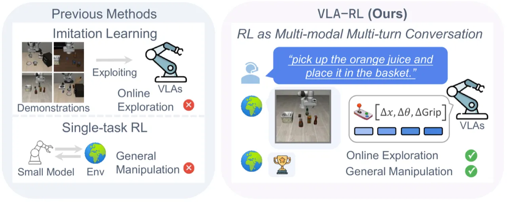
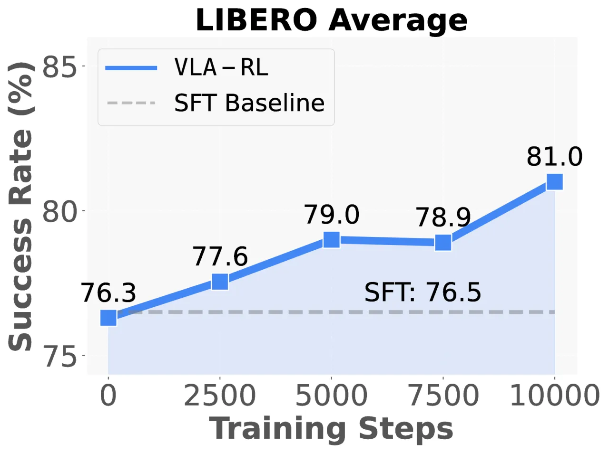
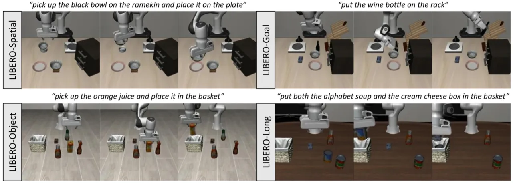
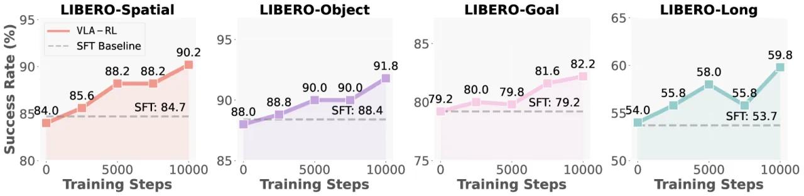
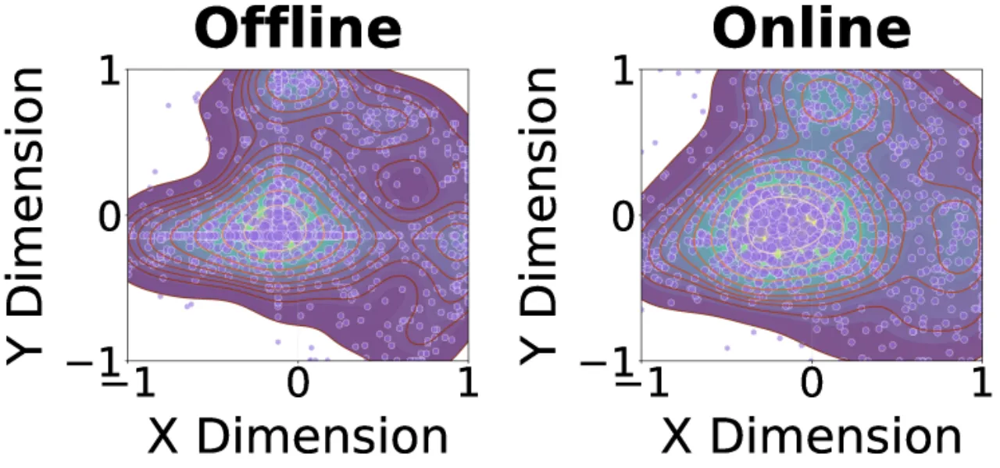

VLA-RL 将预训练视觉-语言-动作（VLA）模型与在线强化学习相结合，系统性地解决模仿学习在分布外场景中的失败问题。框架包含轨迹级 PPO 公式、机器人过程奖励模型（RPRM）以及一系列训练稳定化技术，在 LIBERO 40 任务基准上仅用 48 GPU 小时将 OpenVLA-7B 提升 4.5%，并首次在机器人操作中展示推理阶段缩放规律。
模仿学习驱动的 VLA 模型在遇到训练数据未覆盖的状态时会出现执行失败，根本原因在于其固有的"利用（exploitation）"策略：模型只知道如何重现已见过的轨迹，缺乏在线探索与自我修正能力。
"exploiting offline data with limited visited states will cause execution failure in out-of-distribution scenarios."
作者提出将 VLA 的训练范式从"剥削式"（exploitation-based）转向"探索式"（exploration-based），通过强化学习在测试时收集的在线数据上持续改进。传统 RL 面临数据低效与繁重的奖励工程挑战，但从大型基础模型出发进行微调可以显著缓解这两个问题。

VLA-RL 框架将机器人操作建模为"多模态多轮对话"（multi-modal multi-turn conversation），通过轨迹级 PPO 优化自回归策略，并配备机器人过程奖励模型（RPRM）提供密集奖励信号。

标准 PPO 难以直接应用于自回归 VLA，因为动作空间维度高且每步由多个 token 组成。VLA-RL 的关键推导是："the log-probability of an action sequence can be decomposed into the summation of token-level log probabilities"，从而将轨迹级策略梯度转化为对每个动作 token 的 PPO clip 目标，实现了端到端的在线优化。
稀疏的任务成功奖励难以提供有效学习信号。RPRM 自动从演示轨迹中提取伪标签，分两步构建密集奖励：
最终奖励为稀疏成功奖励与 RPRM 预测的过程奖励之直接求和："the direct summation of the golden sparse reward and the predicted reward from robotic process reward model"。
任务采样概率正比于当前难度，优先采样成功率约为 50% 的任务，即"the frontier of the agent's capabilities"，避免过易（无梯度）或过难（无奖励）的极端情况。
在联合优化开始前，先用模仿预训练策略收集初始轨迹来稳定价值估计，防止 critic 误导 actor 造成早期崩溃。实验表明去除此步骤成功率从 90.2% 降至 80.0%（−10.2%）。
此外，框架采用跨 GPU 均衡向量化环境以管理并行 rollout 的显存消耗，并以较低学习率（2e-5）防止灾难性遗忘。
在 LIBERO 四个任务套件（Spatial / Object / Goal / Long）上各评测 500 个 episode，与 Diffusion Policy、Octo、OpenVLA (SFT)、GRAPE (DPO)、π₀-FAST 进行比较。
| 方法 | Spatial | Object | Goal | Long | 平均 |
|---|---|---|---|---|---|
| Diffusion Policy | 78.3% | 92.5% | 68.3% | 50.5% | 72.4% |
| Octo (SFT) | 78.9% | 85.7% | 84.6% | 51.1% | 75.1% |
| OpenVLA (SFT) | 84.7% | 88.4% | 79.2% | 53.7% | 76.5% |
| GRAPE (DPO) | 87.6% | 91.2% | 82.2% | 55.8% | 79.2% |
| π₀-FAST | 96.4% | 96.8% | 88.6% | 60.2% | 85.5% |
| VLA-RL（本文） | 90.2% | 91.8% | 82.2% | 59.8% | 81.0% |
VLA-RL 在 LIBERO-Long 上与商业闭源模型 π₀-FAST 的差距仅为 0.4%（59.8% vs 60.2%），在 LIBERO-Spatial 与 LIBERO-Long 上排名第一，综合平均排名第 1.5，超越所有开源方法。


| 配置 | 成功率 | 差值 |
|---|---|---|
| VLA-RL（完整） | 90.2% | — |
| 去除 RPRM | 85.8% | −4.4% |
| 去除 Curriculum | 88.0% | −2.2% |
| Temperature 1.5→1.0 | 85.8% | −4.4% |
| 去除 Critic Warmup | 80.0% | −10.2% |
| 学习率 2e-5→2e-4 | 0.2% | −90.0% |
消融结果表明，"eliminating any individual stabilizing technique leads to rapid collapse"。学习率过高导致几乎完全失败，Critic Warmup 去除导致 10.2% 的大幅下降，RPRM 与温度系数均带来约 4.4% 的稳定收益。

"The proposed heuristics for extracting pseudo reward labels may not fully capture the nuances of more dexterous manipulation tasks, potentially leading to inefficient policy optimization." 里程碑分割依赖夹爪状态变化，对于需要精细协调的灵巧手任务可能出现标注不准确。
所有实验在 LIBERO 模拟基准上进行，尚未验证 sim-to-real 迁移。作者将"exploring online self-improvement with large-scale real-world experience"列为未来工作。
轨迹级 RL 公式依赖 token-level log-probability 分解，天然适配自回归架构（如 OpenVLA），但无法直接应用于扩散策略（如 π₀）。作者明确将"training diffusion-based policies with reinforcement learning beyond auto-regressive VLAs"列为未来工作方向。
消融实验显示，仅将学习率从 2e-5 调整为 2e-4 即导致成功率从 90.2% 崩溃至 0.2%；温度系数与 Critic Warmup 步数同样对性能影响显著，提示方法对超参数搜索要求较高。